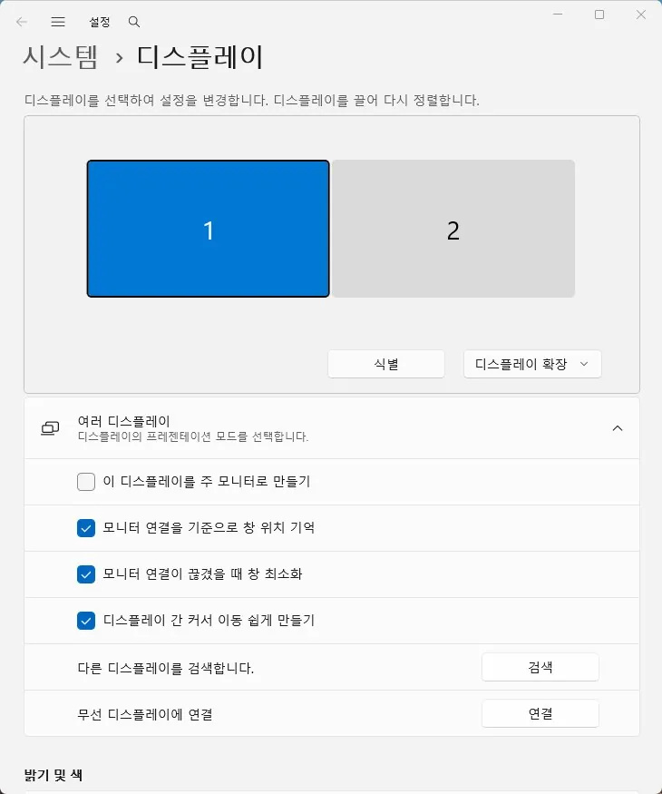

디스플레이
듀얼 모니터 한쪽만 안 나올 때 점검 방법
듀얼 모니터 중 한 대만 감지되지 않거나 신호 없음으로 표시되는 경우
각 모니터를 단독으로 연결했을 때와 두 대를 함께 연결했을 때의 결과를 비교하면 HDMI·DP 케이블·포트 문제와 해상도·주사율·도킹 대역폭 문제를 구분할 수 있습니다.
먼저 확인할 항목
- 모니터와 영상 케이블을 하나씩 시험 — 각 모니터를 같은 케이블·같은 포트에 연결해 단독 출력 여부를 확인합니다.
- 입력 소스와 직접 연결 — 모니터 OSD를 실제 연결한 HDMI·DP 또는 Auto로 설정하고 도킹·허브를 빼고 직접 연결해 봅니다.
- Windows 확장 모드 — Windows 키 + P에서 확장을 선택하고 설정 > 시스템 > 디스플레이에서 감지를 실행합니다.

- 동시 출력 조건 비교 — 두 모니터를 60Hz와 기본 해상도로 낮춰 함께 연결합니다.
- 그래픽 드라이버와 절전 복귀 — 완전 종료 후 재연결하고 드라이버 업데이트 또는 이전 버전 복원을 비교합니다.
확인 결과에 따른 다음 단계
- 각각은 정상, 함께 연결하면 실패 — 해상도·주사율·HDR·도킹/MST 대역폭을 확인합니다.
- 특정 케이블·포트에서만 실패 — 정상 조합과 교차 테스트해 케이블 또는 해당 포트를 분리합니다.
- 절전·업데이트 뒤 시작 — Windows 확장 모드와 그래픽 드라이버 상태를 먼저 확인합니다.
자주 묻는 질문
- HDMI는 되는데 DP만 안 됩니다. DP 케이블·입력·그래픽카드의 해당 포트를 각각 교차 테스트해야 합니다.
- 두 화면이 같은 화면으로만 나옵니다. Windows 키 + P에서 확장을 선택하세요.
- 고주사율에서만 한 화면이 사라집니다. 60Hz에서 정상인지 확인한 뒤 케이블·그래픽카드·도킹의 동시 출력 사양을 비교하세요.